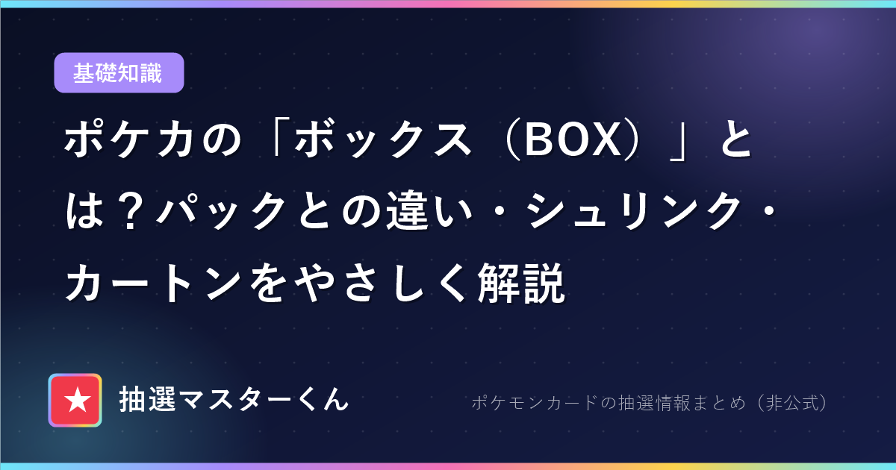

ポケカの抽選情報を見ていると、「1BOX」「BOX（シュリンク付き）」「カートン」といった言葉がよく出てきます。はじめての方には分かりにくいですよね。
この記事では、ポケモンカードの「ボックス（BOX）」とは何か、パックとの違いや関係する言葉を、やさしくまとめました。
この記事の要点
- BOX（ボックス）は、同じ種類の拡張パックを決まった数だけ箱に詰めたまとめ買いの単位
- パックはバラで1つずつ買えるが、人気の新弾はBOXだと抽選になることが多い
- BOXを包む透明なフィルムがシュリンク、ふたを開けるテープがペリペリ
- BOXをさらに何個かまとめた段ボールがカートン
- 抽選に応募するときは「何BOXまでか」「シュリンクの有無」を告知で確認しておく
ポケカの「ボックス（BOX）」とは
ポケモンカードのBOXは、同じ種類の拡張パックを決まった数だけ箱に詰めたものです。お店ではこの箱のまま並んでいることが多く、「1BOX」「2BOX」と数えます。
中に入っているパックの数は、商品の種類によって違います。たとえば新弾「ハドウシーカー」は1パック5枚入りで、BOXは30パック入りと報じられています。ハイクラスパックや記念商品など、BOXの中身の数が違う商品もあるので、商品ごとに確認しましょう。
パックとBOXの違い
| パック | BOX | |
|---|---|---|
| 買う単位 | 1パックずつ | パックをまとめた箱ごと |
| 買い方 | 店頭でバラ売りされることが多い | 人気の新弾は抽選・予約になりやすい |
| 向いている人 | 少しだけ開けて楽しみたい人 | たくさん開けたい人・未開封で保管したい人 |
人気の商品は、発売日に店頭でパックを買おうとしても1人◯パックまでと数が決められていることがあります。BOXで確実に手に入れたいときは、お店の抽選に応募するのが一般的です。
BOXまわりでよく出てくる言葉
シュリンク
BOXの外側をぴったり包んでいる透明なフィルムのことです。出荷されたままの状態かどうかの目安になるので、未開封で保管したい人にとって大事なポイントです。お店によっては、シュリンクを外してから渡すこともあります。くわしくは「シュリンク付きで届くポケカ抽選はどこ？」にまとめています。
ペリペリ（開封テープ）
BOXのふたを開けるときに切るテープのことです。シュリンクに加えて、このペリペリまで切った状態で渡すお店もあります。
カートン
BOXをさらに何個かまとめて入れた段ボールの箱のことです。お店向けの単位なので、ふつうの抽選ではカートン単位で買うことはほとんどありません。
未開封・未サーチ
「未開封」はシュリンクやペリペリが付いたままで、一度も開けていない状態のことです。「未サーチ」は、パックの重さなどで中身を調べる行為（サーチ）をしていないという意味で使われます。
BOXを抽選で手に入れるときのポイント
- 応募条件を見る：会員登録・購入実績・アプリなど、お店ごとに条件があります。お店ごとの条件は「お店から探す」の各ページにまとめています。
- 買える数を見る：多くの抽選は「1人1BOXまで」など数が決まっています。
- 渡し方を見る：シュリンク付きかどうか、パックだけで渡されるかどうかは告知に書かれていることがあります。
- 締切を見る：受付が1日だけの抽選もあります。カレンダーで締切をまとめて確認できます。
いま受付中のBOXの抽選は、抽選一覧で締切が近い順に確認できます。気になる抽選は「マイ抽選」に追加しておくと、応募状況を管理できて便利です。
当サイトは非公式のファンサイトです。価格・日程などは記事公開時点の情報なので、最新の情報は公式サイトや各販売店でご確認ください。